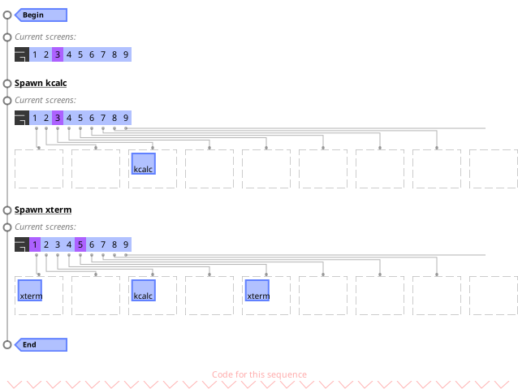
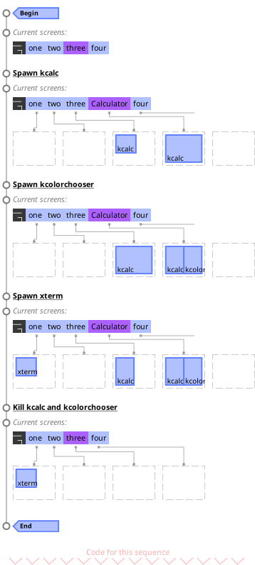
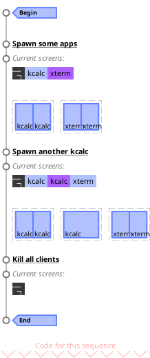
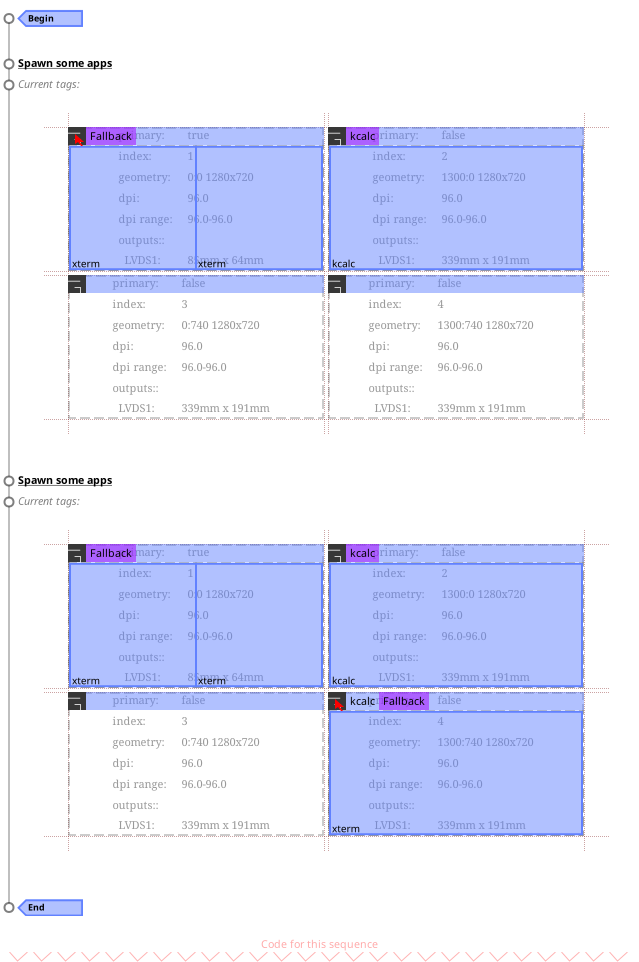
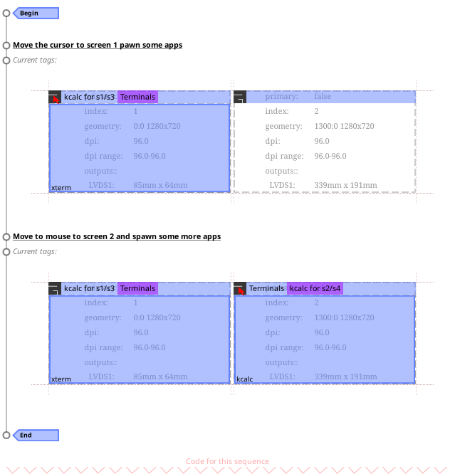

Module: ruled.tag
Rules for tags.
Static tags
In this first example, we create 9 tags which are automatically initialized even when there is no clients:

tag.connect_signal("request::rules", function() for i=1, 9 do ruled.tag.append_rule { rule = {}, -- matches everything properties = { init = true, name = i, selected = i == 3, fallback = true, only_on_selected = true, } } end end) -- The calculator will spawn into the currently selected tag. awful.spawn("kcalc") -- Select tag 1 and tag 5. screen[1].tags[3].selected = false screen[1].tags[1].selected = true screen[1].tags[5].selected = true -- The xterm will be tagged with the 2 selected tags. awful.spawn("xterm")
This is how the default rc.lua works. You get a static number of tags created at startup and they never really change. This is very convinient when accustomed to the classic virtual desktop context. How allows to have simple and deterministic keybindings to switch to a specific tags, because they never move.
However it is rather restrictive to automate your workflow. This forces you to either hardcode all applications you will use or to manually manager every client. Dynamic tags, demonstrated below, create and destroy tags based on what you are doing.
Dynamic tags
The concept of dynamic tagging is to create and destroy tags based on what is going on. For example, an "Internet" tag can be created when you start your web browsing. Another example would be splitting tags in smaller parts when they contain too many clients.
In this example, we create a tag called "calculator" which is only
created when wither kcalc, gnome-calculator or wxmaxima is started.
The tag is also volatile so it will get destroyed when the last client
gets closed.

-- Add some **tag** rules. Note that the rule and rule_any section -- actually match clients. tag.connect_signal("request::rules", function() -- Create 4 generic "workspace like" tags at startup. for k, name in ipairs { "one", "two", "three", "four" } do ruled.tag.append_rule { rule = {}, -- matches everything properties = { init = true, name = name, selected = k == 3, only_on_selected = true, fallback = true, layout = awful.layout.suit.floating, view_only = true, } } end -- Create a "Calculator" only when a new calculator is spawned. ruled.tag.append_rule { rule_any = { class = {"gnome-calculator", "kcalc", "wxmaxima"} }, properties = { init = false, name = "Calculator", index = 4, view_only = true, exclusive = true, volatile = true, layout = awful.layout.suit.fair } } end) -- Add a **client** rule to allowkcolorchooserto be added to the -- selected tags regardless of theirexclusiveorlockedproperties. ruled.client.connect_signal("request::rules", function() ruled.client.append_rule { rule_any = { class = {"kcolorchooser"} }, properties = { intrusive = true, }, } end) -- Spawn a Calculator. awful.spawn("kcalc") -- Spawn a kcolorchooser, which should enter the tag because it is intrusive. awful.spawn("kcolorchooser") -- Spawn xterm, it should pick another tag because it isn't allowed into -- the exclusive tag. awful.spawn("xterm") -- Kill kcalc and kcolorchooser, the "Calculator" will be destroyed -- because it is volatile. for _, c in ipairs(client.get()) do if c.class == "kcalc" then c:kill() end end for _, c in ipairs(client.get()) do if c.class == "kcolorchooser" then c:kill() end end
In this example, the rules are configured to create new tags for each client
class and assign at most 2 clients per tag, after which a new tag will be
created. It also demonstrate how to use a function on the index property
to place tags with the same name next to each other.

-- Try to group tags by name. local function group_tags(c, rule) local name = type(rule.name) == "function" and rule.name(c, rule) or rule.name or c.class for idx, t in ipairs(c.screen.tags) do if t.name == name then return idx + 1 end end end tag.connect_signal("request::rules", function() -- Create tags for each client class with a maximum of 2 clients per tag. ruled.tag.append_rule { rule = {}, -- matches everything properties = { name = function(c) return c.class end, icon = function(c) return c.icon end, view_only = true, multi_class = false, max_client = 2, index = group_tags, layout = awful.layout.suit.fair, volatile = true, } } end) -- Spawn some apps. awful.spawn("kcalc") awful.spawn("xterm") awful.spawn("kcalc") awful.spawn("xterm") -- Spawn another kcalc, it should create a tag next to the original. awful.spawn("kcalc") -- Kill all clients. There is no non-volatile tags, so none should remains. for i = #client.get(), 1, -1 do client.get()[i]:kill() end
This example shows how to use tag rules to send clients to a specific screen.
Multiple screens
In this example, the tags can only be created on screen 2 and 4. If the client aims to appear on screen 1 or 3, it will be moved:

ruled.client.connect_signal("request::rules", function() -- These are a subset of the default rc.lua client rules. If you already -- have them, don't add this. ruled.client.append_rule { rule = {}, properties = { focus = awful.client.focus.filter, raise = true, screen = awful.screen.preferred, placement = awful.placement.no_overlap+awful.placement.no_offscreen }, } end) tag.connect_signal("request::rules", function() -- Allow tags named "kcalc" to be created on screen 2 and 4, but not -- 1 and 3. ruled.tag.append_rule { rule_any = { class = {"kcalc"}, }, properties = { screens = {screen[2], screen[4]}, name = function(c) return c.class end, icon = function(c) return c.icon end, view_only = true, multi_class = false, max_client = 2, layout = awful.layout.suit.fair, volatile = true, exclusive = true, } } -- This is a fallback tag because otherwise xterm would not match -- anything. It will exist for each screen. ruled.tag.append_rule { fallback = true, rule = {}, properties = { name = "Fallback", icon = function(c) return c.icon end, view_only = true, multi_class = true, layout = awful.layout.suit.fair, volatile = true, exclusive = false, } } end) -- Move the mouse to screen 1, where it cannot create the tag. mouse.coords { x = screen[1].geometry.x + 10, y = screen[1].geometry.y + 10, } -- Spawn some apps. awful.spawn("kcalc") -- Both xterm client should share the same fallback tag. awful.spawn("xterm") awful.spawn("xterm") -- Move the mouse to screen 2, where it can create the tag. mouse.coords { x = screen[4].geometry.x + 10, y = screen[4].geometry.y + 10, } awful.spawn("kcalc") awful.spawn("xterm")
In this example, different screens have different rules for the same class:

ruled.client.connect_signal("request::rules", function() -- These are a subset of the default rc.lua client rules. If you already -- have them, don't add this. ruled.client.append_rule { rule = {}, properties = { focus = awful.client.focus.filter, raise = true, screen = awful.screen.preferred, placement = awful.placement.no_overlap+awful.placement.no_offscreen }, } end) tag.connect_signal("request::rules", function() -- Allow tags named "kcalc" to be created on screen 2 and 4, but not -- 1 and 3. ruled.tag.append_rule { rule_every = { class = {"kcalc"}, screen = {screen[1]}, }, properties = { name = function(c) return c.class .. " for s1/s3" end, icon = function(c) return c.icon end, view_only = true, multi_class = false, max_client = 2, layout = awful.layout.suit.fair, volatile = true, exclusive = true, } } -- Different layout if on screen 1 or 3. ruled.tag.append_rule { rule_any = { class = {"xterm"}, }, properties = { name = "Terminals", icon = function(c) return c.icon end, view_only = true, multi_class = false, layout = awful.layout.suit.max, volatile = true, exclusive = true, } } ruled.tag.append_rule { rule_every = { class = {"kcalc"}, screen = {screen[2]}, }, properties = { name = function(c) return c.class .. " for s2/s4" end, icon = function(c) return c.icon end, view_only = true, multi_class = false, max_client = 2, layout = awful.layout.suit.max, volatile = true, exclusive = true, } } end) -- Move the mouse to screen 1, where it cannot create the tag. mouse.coords { x = screen[1].geometry.x + 10, y = screen[1].geometry.y + 10, } -- Spawn some apps. awful.spawn("kcalc") awful.spawn("xterm") -- Move the mouse to screen 2, where it can create the tag. mouse.coords { x = screen[2].geometry.x + 10, y = screen[2].geometry.y + 10, } awful.spawn("xterm") awful.spawn("kcalc")
Properties available in the rules
| Name | Description |
|---|---|
| index | The tag index |
| isolated | When set, clients added to this tag will be untagged from all other tags |
| max\_client | The maximum number of client before creating a duplicate |
| focus\_policy | Define when clients on this tag are allowed to steal the focus |
| relocator | Function called when new screens are added to potentially relocate the tag |
| exclusive | Define if a tag implicitly reject or allow any client |
| screen | The tag screen |
| master\_width\_factor | The tag master width factor |
| layout | The tag client layout |
| layouts | The (proposed) list of available layouts for this tag |
| volatile | Define if the tag must be deleted when the last client is untagged |
| gap | The gap (spacing, also called useless\_gap) between clients |
| gap\_single\_client | Enable gaps for a single client |
| master\_fill\_policy | Set size fill policy for the master client(s) |
| master\_count | Set the number of master windows |
| icon | Set the tag icon |
| column\_count | Set the number of columns |
| name | Tag name |
| selected | True if the tag is selected to be viewed |
| activated | True if the tag is active and can be used |
| index | The tag index |
| isolated | When set, clients added to this tag will be untagged from all other tags |
| max\_client | The maximum number of client before creating a duplicate |
| focus\_policy | Define when clients on this tag are allowed to steal the focus |
| relocator | Function called when new screens are added to potentially relocate the tag |
| exclusive | Define if a tag implicitly reject or allow any client |
| screen | The tag screen |
| master\_width\_factor | The tag master width factor |
| layout | The tag client layout |
| layouts | The (proposed) list of available layouts for this tag |
| volatile | Define if the tag must be deleted when the last client is untagged |
| gap | The gap (spacing, also called useless\_gap) between clients |
| gap\_single\_client | Enable gaps for a single client |
| master\_fill\_policy | Set size fill policy for the master client(s) |
| master\_count | Set the number of master windows |
| icon | Set the tag icon |
| column\_count | Set the number of columns |
| name | Tag name |
| selected | True if the tag is selected to be viewed |
| activated | True if the tag is active and can be used |
Info:
- Copyright: 2011-2019 Emmanuel Lepage Vallee
-
Originally authored by: Emmanuel Lepage Vallee <elv1313@gmail.com>
(Full contributors list available on our github project)
Functions
| ruled.tag.remove_rule_source (name) | Remove a source. | |
| ruled.tag.apply (c) | Apply the tag rules to a client. | |
| ruled.tag.append_rule (table) | Add a new rule to the default set. | |
| ruled.tag.append_rules (table) | Add a new rules to the default set. | |
| ruled.tag.remove_rule (table) | Remove a new rule to the default set. | |
| ruled.tag.get_or_create_by_name (name, screen, args) | Return an existing dynamic tag or create one. | |
| ruled.tag.get_names () | Return a list of static names for dynamic tags. | |
| ruled.tag.rules_for_name (name) | Get the rules for a tag name. | |
| ruled.tag.get_next_tag (t, args) | Configurable way to get "the next tag". | |
Rule components
| properties | table | A table whose content will be used to set the target object properties. | |
| callbacks | table | A list of callback function to call after the properties have been apploed. | |
| rule | table | A table whose content will be compared to the target object current properties. | |
| rule_any | table | Similar to rule, but each entry is a table with multiple values. | |
| except | table | The negative equivalent of rule. | |
| except_any | table | The negative equivalent of rule_any. | |
| rule_every | table | Matches when one of every \"category\" of components match. | |
| rule_lesser | table | A table whose content will be compared to the target object current properties. | |
| rule_greater | table | A table whose content will be compared to the target object current properties. | |
| id | table or string or number or function | An identifier for this rule. | |
Extra properties available in the rules
| init | boolean | Create the tag when the rules are executed or only when clients are tagged. | |
| switch_to_tags | boolean | Unselect the current tags and select this client tags when a client is tagged. | |
| view_only | boolean | Deselect all tags and select the tag when a client is tagged. | |
| multi_class | boolean | Allow multiple classes in the tag. | |
| only_on_selected | boolean | Only tag clients to this tag if it is currently selected. | |
Functions
Methods- ruled.tag.remove_rule_source (name)
-
Remove a source.
Parameters:
- name string The source name.
Returns:
-
boolean
If the source was removed,
- ruled.tag.apply (c)
-
Apply the tag rules to a client.
This is useful when it is necessary to apply rules after a tag has been created. Many workflows can make use of "blank" tags which wont match any rules until later.
Parameters:
- c client The client.
- ruled.tag.append_rule (table)
-
Add a new rule to the default set.
Parameters:
- table rule A valid rule.
- ruled.tag.append_rules (table)
-
Add a new rules to the default set.
Parameters:
- table rule A table with rules.
- ruled.tag.remove_rule (table)
-
Remove a new rule to the default set.
Parameters:
- table rule A valid rule.
- ruled.tag.get_or_create_by_name (name, screen, args)
-
Return an existing dynamic tag or create one.
Parameters:
- name
- screen
- args
Returns:
-
tag or nil
A tag or nil if the name doesn't exist.
- ruled.tag.get_names ()
-
Return a list of static names for dynamic tags.
Do not modify this list. If a copy is needed, use:
local names = gears.table.clone(awful.tag.rules.get_names()) - ruled.tag.rules_for_name (name)
-
Get the rules for a tag name.
Note, do not modify the returned table, make a deep copy if a modified version is needed.
Parameters:
- name
- ruled.tag.get_next_tag (t, args)
-
Configurable way to get "the next tag".
It can navigate across screens, rotate tags or create new ones.
The "WMii workflow" is to create a new tag when you reach the last one and remove empty tags.
Parameters:
- t
- args TODO eminent style create TODO rotate TODO args.direction TODO args.rotatetags TODO args.rotatescreens TODO args.fallback
Rule components
- properties table
-
A table whose content will be used to set the target object properties.
See also:
- callbacks table
-
A list of callback function to call after the properties have been apploed.
See also:
- rule table
-
A table whose content will be compared to the target object current properties.
See also:
- rule_any table
-
Similar to rule, but each entry is a table with multiple values.
See also:
- except table
-
The negative equivalent of rule.
See also:
- except_any table
-
The negative equivalent of rule_any.
See also:
- rule_every table
-
Matches when one of every \"category\" of components match.
See also:
- rule_lesser table
-
A table whose content will be compared to the target object current properties.
The comparison will be made using the lesser (
<) operator.See also:
- rule_greater table
-
A table whose content will be compared to the target object current properties.
The comparison will be made using the greater (
>) operator.See also:
- id table or string or number or function
-
An identifier for this rule.
It can be anything. It will be compared with the
==operator. Strings are highly recommended.Setting an id is useful to be able to remove the rule by using its id instead of a table reference. Modules can also listen to
rule::appendedand modify or disable a rule.
Extra properties available in the rules
- init boolean
-
Create the tag when the rules are executed or only when clients are tagged.
They will be created in all matching screens.
See also:
- switch_to_tags boolean
-
Unselect the current tags and select this client tags when a client is tagged.
See also:
- view_only boolean
-
Deselect all tags and select the tag when a client is tagged.
See also:
- multi_class boolean
-
Allow multiple classes in the tag.
When set to false, only clients from the same class will be tagged to this tag.
See also:
- only_on_selected boolean
-
Only tag clients to this tag if it is currently selected.
If no tag is selected, this is ignored and one will be selected.